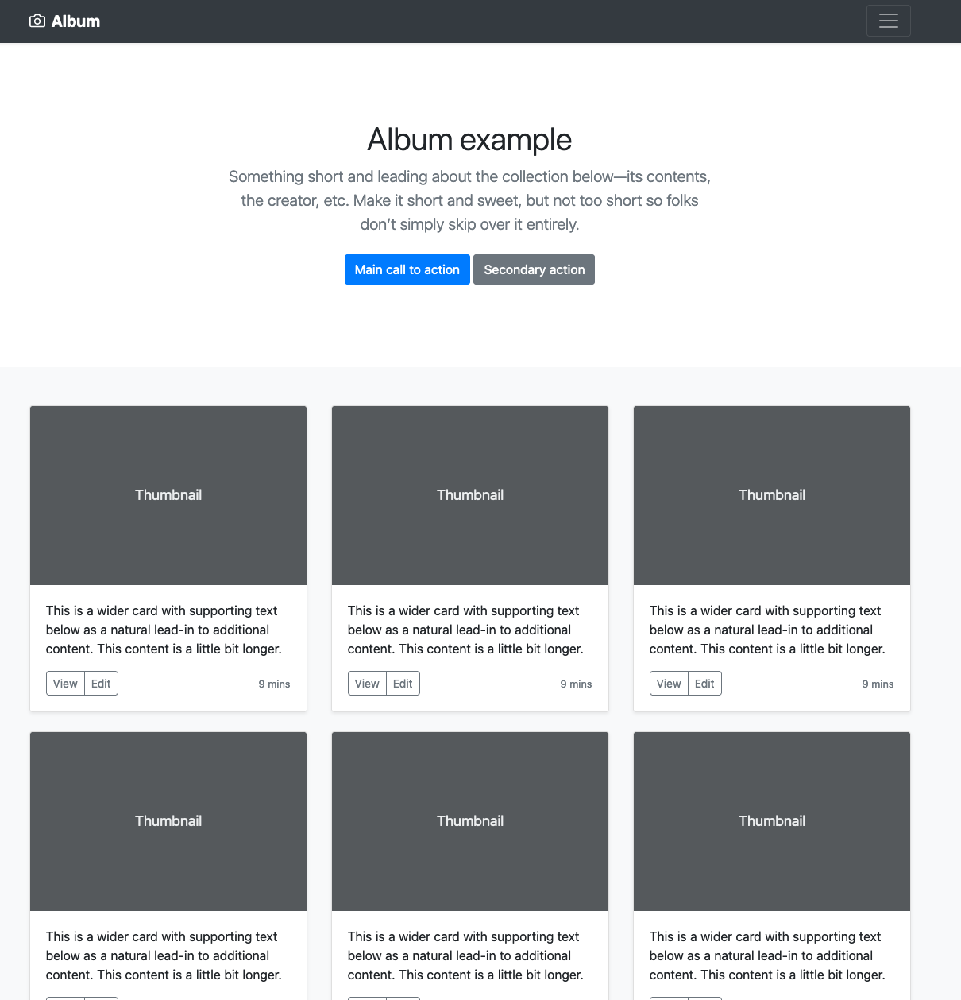
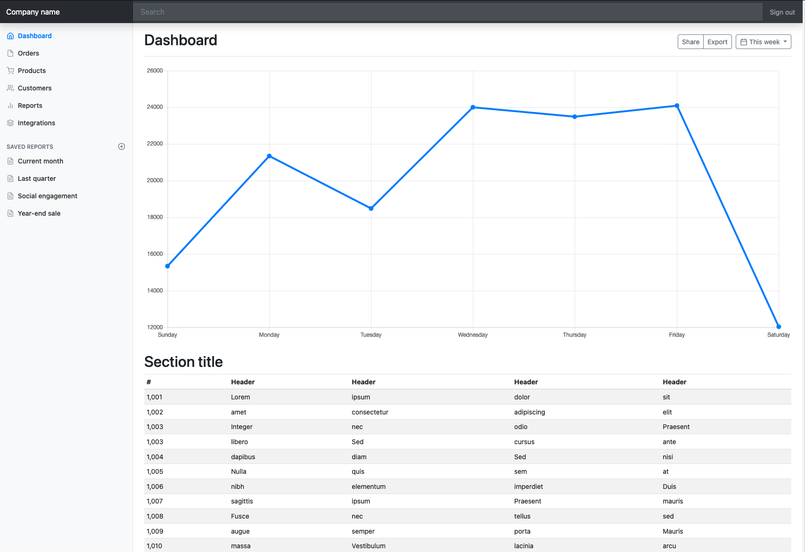

Introduction to Ag Informatics
Module 5, Lecture 3Ankita Raturi, ankita@purdue.edu
Fall 2021
Outline for Today
- Paper Prototyping
- Lab Discussion
- Project Discussion
Paper Prototyping
Activity: Paper Prototyping LITE
Individually
Consider your ACRE Farm Management Django App (Lab 4)
- What is a missing feature that the farm manager/workers might desire?
- What might the interface for this feature look like?
- Keep in mind the Bootstrap components and UI elements.
Create an "interactive" paper prototype for your new functionality.
Activity: Paper Prototyping LITE
In PAIRS
When someone is testing your prototype, take notes on:
- Where did users get stuck?
- Where did users seem to gain the most value (joy, usefulness, or something else)?
- What are three things you would improve on your app?
Aggregate these notes across all your testers, and this will go into your lab 5 submission.
Lab 5
https://github.com/ag-informatics/ag-informatics-course/tree/main/module5/lab5Bootstrap!
An open source collection of prebuilt, configurable, user interface components and page layouts. Think lego.
What does it contain?
Bootstrap UI Kit
Bootstrap UI Kit
Project Part II
https://github.com/ag-informatics/ag-informatics-course/tree/main/projectHomework
Thursday's lecture is a live web lecture and will include a presenter from industry.
Project Part II is out!
Lab 5 and Quiz 5 both due Monday
Questions?
License
- Attribution Recommendation: Introduction to Agricultural Informatics Course", Ankita Raturi, Purdue University, 2021. Available at https://github.com/ag-informatics/ag-informatics-course. Licensed by CC BY-NC-SA 4.0.

This course is licensed under a Creative Commons Attribution-NonCommercial-ShareAlike 4.0 International (CC BY-NC-SA 4.0) license. This is a human-readable summary of (and not a substitute for) the license. Official translations of this license are available in other languages.
You are free to:
- Share — copy and redistribute the material in any medium or format
- Adapt — remix, transform, and build upon the material
Under the following terms:
- Attribution — You must give appropriate credit, provide a link to the license, and indicate if changes were made. You may do so in any reasonable manner, but not in any way that suggests the licensor endorses you or your use.
- NonCommercial — You may not use the material for commercial purposes.
- ShareAlike — If you remix, transform, or build upon the material, you must distribute your contributions under the same license as the original.
- No additional restrictions — You may not apply legal terms or technological measures that legally restrict others from doing anything the license permits.